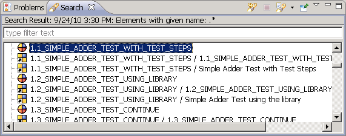

The search result view (5.6) is at the bottom of the Functional Test Specification Perspective , under the editor area, and just behind the Problem View by default. If you perform searches, the results are shown here. For most searches, if you double-click on an item in the search result view, the corresponding item is highlighted in the Test Case Browser or Test Suite Browser . You can see a history of previous searches, and re-run them directly from within the view. You can also refresh the current search.
Figure 5.6: Search Result View
|

|
Copyright BREDEX GmbH 2014. Made available under the Eclipse Public License v1.0.